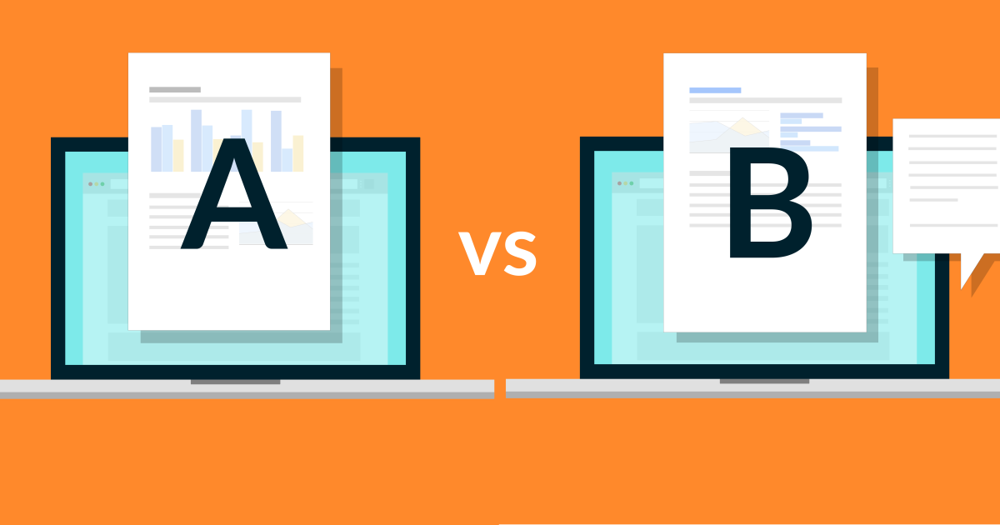

These projects consist of more than 7 data visualization dashboards that are made by Tableau. In these projects, we can see interactive dashboards from many international companies that aim to look at their performances.
This project aims to reduce employee attrition in IBM Company. We use 2 methods to overcome this problem, namely Exploratory Data Analysis (EDA) and Logistic Regression. From our analysis, we give recommendations to HR Recruitment, HR Payroll & Benefit, and HR Learning & Development. We also propose a regression model to Machine Learning Engineering so that HR Recruitment can see attrition risk for each employee candidate.

This dashboard tells us about the movies and their correlation with time, actors, and country. Made with Google Data Studio (GDS), we can also use the filter if we want to know specifically about our data visualization.

The new start-up company still do not know the habits of their customer and have not done customer segmentation for their marketing. So, this project aims to understand buyer habits and do customer segmentation with K-Means. I use Google Collaboratory as my data analytics tool. After doing EDA and K-Means, I also give insights and business recommendations to the company.
Bike sharing systems are new generation of traditional bike rentals where whole process from membership, rental and return back has become automatic. This project aims to do Exploratory Data Analysis (EDA) from Bike Sharing Demand Dataset. Before doing EDA, this project also did data cleaning in order to make the analysis more significant.

A fast-food chain plans to add a new item to its menu. However, they are still undecided between three possible marketing campaigns for promoting the new product. In order to determine which promotion has the greatest effect on sales, the new item is introduced at locations in several randomly selected markets. A different promotion is used at each location, and the weekly sales of the new item are recorded for the first four weeks. This presentation will focus to determine which promotion is the best for the company using A/B Testing.
This portfolio is one of my assignments in RevoU. I do data analysis using SQL using TheLook Dataset that I contain from Google Big Query. There, I used basic SQL queries, and also advanced SQL queries (windows function, subqueries, CTE, etc.). This portfolio also contains practical analysis that usually is used in companis, such as growth and cohort analysis.